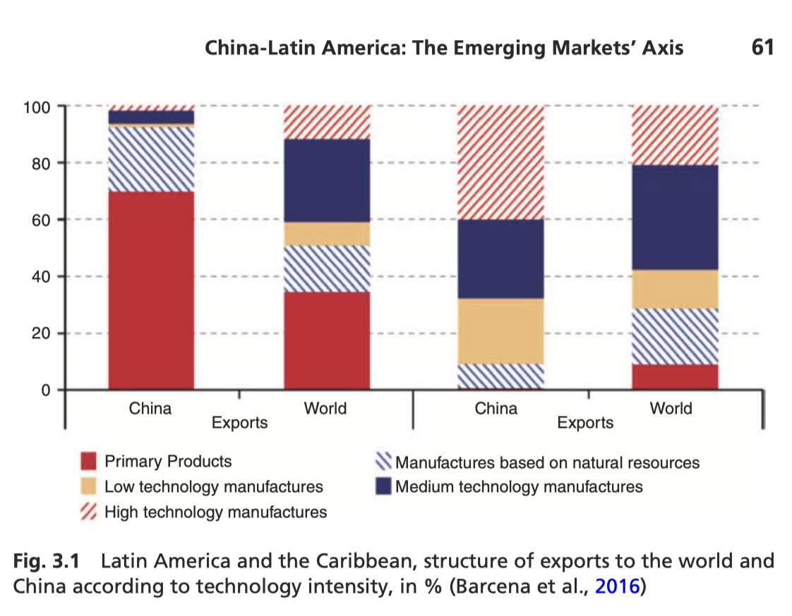
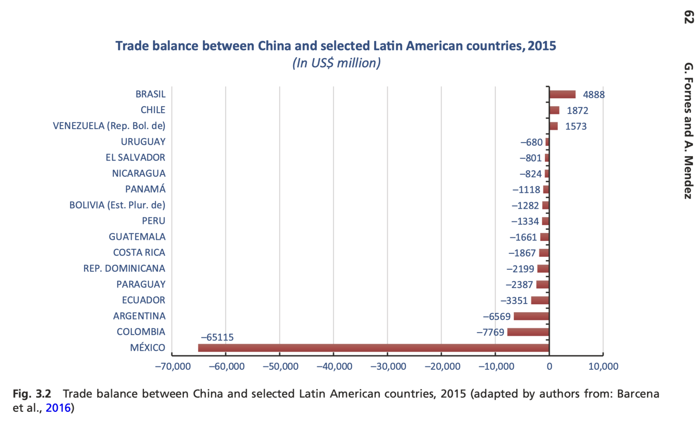

1) Crecimiento acelerado del intercambio
El comercio China–AL crece muy rápido (multiplicación en pocos años) y luego se “enfría” en algunos periodos.
- ¿Qué factores explican el “boom” (demanda china, materias primas, alimentos)?
- ¿Qué significa que el crecimiento “se enfrió”? ¿Por qué puede pasar?
- ¿Qué datos (años/valores) usarías para mostrar el cambio?
2) Complementariedad… con costo
Suramérica tiende a vender recursos y comprar manufacturas; eso se ve “complementario”, pero trae costos.
- ¿Qué vende más AL a China: primarios o alta tecnología?
- ¿Qué compra más AL a China: manufacturas de qué tipo?
- ¿Cuál es el costo para productores locales cuando entran manufacturas chinas?
3) Reprimarización
Aunque cambien precios de commodities, persiste (y puede empeorar) la especialización en primarios hacia China.
- ¿Qué es “reprimarización” en una frase?
- ¿Por qué es un riesgo depender de exportar primarios?
- ¿Qué indicador (exportaciones por intensidad tecnológica) lo muestra mejor?
4) Déficit de México vs. equilibrio en Suramérica
México suele tener déficits grandes con China; parte se explica por redes de producción (componentes importados, ensamble, exportación a EE.UU.).
- ¿Qué papel juegan las cadenas NAFTA/USMCA en ese déficit?
- ¿Por qué el ensamble para exportar a EE.UU. cambia la lectura del déficit?
- ¿Qué países aparecen con superávit y por qué?
5) FTAs y “diplomacia económica”
China firma tratados (Chile, Perú, Costa Rica) y usa visitas de alto nivel para destrabar comercio e inversión.
- ¿Qué ventaja política tiene usar “cumbres” y visitas presidenciales?
- ¿Qué cambió cuando algunos países reconocieron a China como “economía de mercado”?
- ¿Qué efecto tiene un FTA sobre sectores sensibles en AL?
6) “Go Out” + expansión global
La salida de empresas chinas al exterior se apoya en política estatal para buscar mercados, recursos y aprendizaje.
- ¿Qué es “Go Out” (en palabras simples)?
- ¿Qué buscan las empresas: recursos, mercados, tecnología o todo a la vez?
- ¿Cómo cambia la relación cuando ya no es solo comercio, sino inversión?
7) Inversión: concentración sectorial
Una gran parte de la inversión china se concentra en minería/hidrocarburos; también hay manufactura e infraestructura.
- ¿Por qué minería y petróleo atraen tanto capital chino?
- ¿Qué diferencia hay entre “más proyectos” y “más monto” invertido?
- ¿Qué países concentran más inversión y por qué?
8) Joint ventures primero (evitar fricción)
Para reducir acusaciones de neo-colonialismo y aprender el entorno, se prefiere JV o M&A antes que greenfield.
- ¿Por qué un JV puede facilitar “aceptación local”?
- ¿Qué gana una firma china al comprar/aliarse vs. construir desde cero?
- ¿Qué riesgos sociales/ambientales aparecen en extractivas?
9) Infra financiada por bancos chinos
Muchos proyectos vienen con financiamiento chino y condición de que la obra la hagan firmas chinas.
- ¿Qué implica “financiamiento atado” para proveedores locales?
- ¿Por qué energía/redes eléctricas aparecen como sector clave?
- ¿Qué ventaja tiene China al combinar préstamo + empresa constructora?
10) Fórmula “1+3+6”
Un plan con tres ejes (comercio, finanzas, inversión) y seis áreas (energía, infra, agricultura, manufactura, innovación, TIC).
- ¿Cuáles son los 3 ejes? (menciónalos)
- ¿Cuáles son 2 áreas de las 6 que te parezcan más estratégicas y por qué?
- ¿Cómo conectarías este marco con un ejemplo concreto (p. ej. energía o puertos)?
11) China como “prestamista clave”
Los préstamos chinos (policy banks) crecen y en algunos casos sustituyen a otras fuentes; se enfocan en infraestructura y recursos.
- ¿Qué tipo de proyectos suelen financiar estos préstamos?
- ¿Qué significa que no pidan “condicionalidad” como FMI/BM?
- ¿Cuándo un préstamo puede volverse palanca de influencia?
12) Dependencia y (no) reciprocidad
Se mencionan riesgos: ciclos de dependencia, pagos en especie (petróleo), y mercados asimétricos (China más cerrada en sectores clave).
- ¿Cómo se crea una “dependencia” si el país no puede pagar en tiempo?
- ¿Qué efecto tiene pagar con petróleo (o commodities) en la política económica?
- ¿Qué significa “falta de reciprocidad” en acceso a mercados/sectores?
13) Estructura de exportaciones por intensidad tecnológica
Esta gráfica compara la composición tecnológica de las exportaciones latinoamericanas, revelando patrones de especialización y el contraste entre mercados. La concentración en productos primarios y manufacturas basadas en recursos naturales hacia China evidencia la reprimarización mencionada en tarjeta 3.

- ¿Qué porcentaje representan los productos primarios en las exportaciones a China vs. al mundo?
- ¿Cómo se compara la participación de manufacturas de alta tecnología en ambos destinos?
- ¿Qué revela esta asimetría sobre la "complementariedad" mencionada en la tarjeta 2?
- ¿Qué sectores productivos locales pueden verse afectados por este patrón de comercio?
14) Balanza comercial bilateral por país (2015)
Esta visualización muestra la situación comercial de cada país latinoamericano con China en 2015. Los superávits se concentran en países con abundancia de recursos naturales (Brasil, Chile, Venezuela), mientras que México registra el mayor déficit, reflejando su integración en cadenas de valor norteamericanas que importan componentes chinos.

- ¿Qué países tienen superávit y cuáles déficit? ¿Qué exportan/importan principalmente?
- ¿Por qué México tiene el mayor déficit? ¿Cómo se relaciona con NAFTA/USMCA (tarjeta 4)?
- ¿Qué países sudamericanos muestran equilibrio o superávit? ¿Qué recursos explican esto?
- ¿Cómo ha cambiado este panorama desde 2015? ¿Qué factores (precios de commodities, política comercial) influyen?